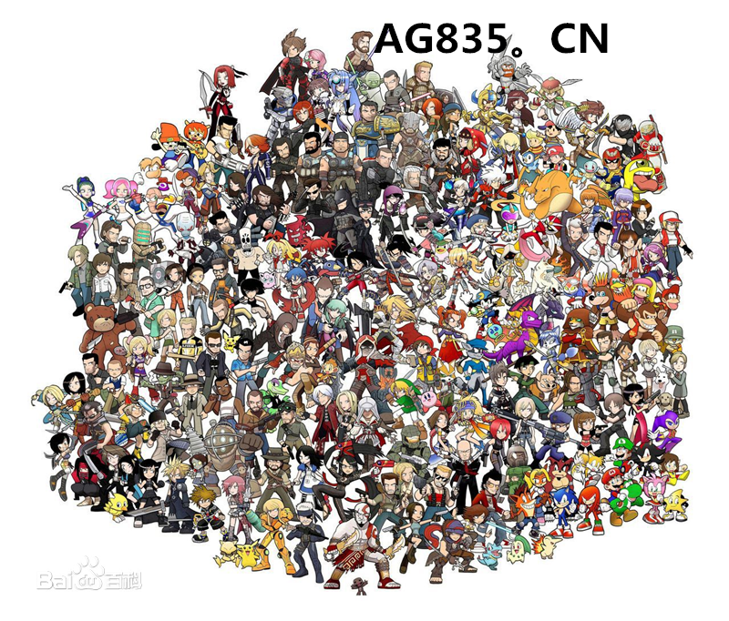

游戏电子游戏（Electronic Games）又称视频游戏（Video Games）或者电玩游戏（简称电玩），是指所有依托于电子设备平台而运行的交互游戏。根据媒介的不同多分为五种：主机游戏（或称家用机游戏、电视游戏）、掌机游戏、电脑游戏、街机游戏和移动游戏（主要是手机游戏）。完善的电子游戏在20世纪末出现，改变了人类进行游戏的行为方式和对游戏一词的定义，属于一种随科技发展而诞生的文化活动。电子游戏也可代指"电子游戏软件"。历史沿革游戏的诞生电子游戏于1952年面世，为井字棋游戏，游戏平台是真空管电脑，当时现代电脑也只是刚面世不足十年。之后出现的是发布于1958年10月18日的网球游戏《双人网球》（Tennis For Two），虽然说是网球游戏，实际上的画面却比较类似现代的气垫台。 雅达利时代基本上大家公认的第一个游戏市场是ATARI时期，它的模式是，ATARI出主机，同时也给自己主机出游戏，主机和游戏都赚钱。而其他厂商也可以给ATARI出游戏。但是这个市场其实非常不稳定，情况与现在的手游市场可以说一模一样：当时的玩家素质低，对于什么游戏好什么游戏差并不清楚，买游戏时撞大运的成分大，这就给大量浑水摸鱼厂商以机会。垃圾游戏充斥市场，ATARI自己也在刷新游戏质量下限，并制造了《ET》。1970年代，文字式游戏出现，也是Atari的黄金期。1976年Atari易手，全力发展电子游戏事业；日本方面，另一大厂Taito也加入游戏界战团，推出了经典游戏《太空侵略者》。1980年代初，各款经典游戏相继发行，首先Namco推出《吃豆人》，期后Zork推出《创世纪》，任天堂亦推出《大金刚》；其他电器大厂如飞利浦和IBM也加入电子游戏业，美国EA电子艺界亦在这时组成。1980年代中期，Atari、世嘉及任天堂将战场转移到家用游戏机硬件上，同时推出新款家用机。 转折和发展1980未期是电子游戏的转折点。电脑由于得到显卡的强大支持，开始渐渐掘起；另一大突破是，任天堂推出Game Boy，打开了便携式游戏机的无限发展空间。21世纪前，家用游戏形成三足并立的局面，N64原本在机能上远胜另外两款家用机，不过其插卡带游戏模式，使N64流失大量玩家游戏开发商，为求改变局面，世嘉最先推出新款家用机——Dreamcast；正当各款家用机正争持不下的时候，微软的视窗系统几乎已经垄断家用电脑市场，模拟人生、无尽的任务、暗黑破坏神分别在电脑平台上登场。 二十一世纪的进步踏入二千年，索尼率先向世嘉还击，推出PlayStation 2(PS2)，01年，任天堂亦跟随推出新机种GameCube，同年，电脑软件龙头微软进军电子游戏业，发行了首部家用机Xbox，电子游戏混战由三国变成四国，不过，二千年早期的家机大战，由索尼高姿态胜出，至今已经卖出超过一亿台主机，论机能，其实都不分轩轾，不过索尼背靠强劲的多个游戏开发商，全球热爆的大作最终幻想(Final Fantasy)、勇者斗恶龙(Dragon Quest)、生化危机(Bio Hazard)都选择着陆在索尼的主机PS2上，令PS2在第二次家用机大战中获胜；与此同时，电脑游戏再次分家，分为单机游戏和网络游戏；单机版游戏方面，自02年开始，Maxis发行的模拟人生已经连续称霸了电脑游戏榜多年；网络游戏则被称为发展的项目，尤其是在中国大陆，原因是拥有电脑及能连上互联网的人，远比拥有任何一款家用机的人多；在二千年，西方国家已经发展了数年的网络游戏，EQ及UO已经在西方国家生根，在亚洲国家则刚起步，台湾游戏金庸群侠传及韩国游戏仙境传说均引起热潮。 二千年中期，网络游戏由于其一直为人诟病的外挂问题，使其发展停济不前，惟独暴雪的魔兽世界能一枝独秀；被人遗忘了的便携式游戏机起了另一场风云，雄霸了便携式游戏机市场近十五年的任天堂，接受索尼新机PlayStation Portable的正面冲击，任天堂推出新主机Ninetndo Dual Screen(NDS)迎战，但两者方向迥异。 2006年，家用机市场再起风云。世嘉完全退出了家用机硬件的战场，回归到游戏开发上；在第三次家用机大战中，微软首先出招，推出Xbox 360，以强劲的电脑底板作支持，在电子运算上远超当时其他主机，索尼推出PlayStation 3，索尼在PS3上创新地使用了蓝光光盘，但由于游戏开发成本高昂，令不少大厂家退出索尼的幕后，任天堂则推出Wii，Wii在机能上远逊于两机，不过具有动态感应的新型主机操作方式，以真实互动为卖点，成为最为畅销的主机，且避开了于微软、索尼的直接竞争。 直至2009年中，三款家用机各有长短，Wii销售领先，Xbox 360屡发质量问题，但是其线上游戏；电脑游戏方面，依然是模拟人生和魔兽世界两只游戏，分别在单机游戏和网络游戏领先，不过网络游戏的涌现，令大量粗制滥造的产品充斥市面，同时线上游戏分支网页游戏以及逆行传统商业游戏模式的独立游戏崛起；苹果的iphone则扩展了手机游戏市场。  |